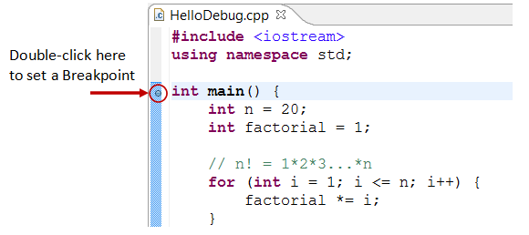

Eclipse is an open-source Integrated Development Environment (IDE) supported by IBM. The mother site is @ www.eclipse.org. Eclipse is popular for Java project development. It also supports C/C++, PHP, Python, Perl, and other web project developments via extensible plug-ins. Eclipse is cross-platform and runs under Windows, Linux and Mac OS.
How to Install Eclipse C/C++ Development Tool (CDT) 8.1.2 for Eclipse 4.2.2 (Juno)
Step 0: Install MinGW GCC or Cygwin GCC
To use Eclipse for C/C++ programming, you need a C/C++ compiler. On Windows, you could install either MinGW GCC or Cygwin GCC. Choose MinGW if you are not sure, because MinGW is lighter and easier to install, but having less features.
- MinGW GCC: Read "How to Install MinGW".
- Cygwin GCC: Read "How to Install Cygwin". Make sure that you select "
gcc", "g++", "gdb", and "make" packages under the "Devel" (Development) category - these packages are not part of the default installation.
Step 1: Install Eclipse C/C++ Development Tool (CDT)
Two ways to install CDT, depending on whether you have previously installed an Eclipse:
- If you have already installed "Eclipse for Java Developers" or other Eclipse packages, you could install the CDT plug-in as follows:
Launch Eclipse ⇒ Help ⇒ Install New Software ⇒ In "Work with" field, pull down the drop-down menu and select "Kepler - http://download.eclipse.org/releases/kepler" (or juno for Eclipse 4.2; or helios for Eclipse 3.7).
In "Name" box, expand "Programming Language" node ⇒ Check "C/C++ Development Tools" ⇒ "Next" ⇒ ... ⇒ "Finish". - If you have not install any Eclipse package, you could download "Eclipse IDE for C/C++ Developers" from http://www.eclipse.org/downloads, and unzip the downloaded file into a directory of your choice.
Step 2: Configuration
You do NOT need to do any configuration, as long as the Cygwin or MinGW binaries are included in the PATH environment variable. CDT searches the PATH to discover the C/C++ compilers.
Writing your First C/C++ Program in Eclipse
C++ Program
Step 0: Launch Eclipse
- Start Eclipse by running "
eclipse.exe" in the Eclipse installed directory. - Choose an appropriate directory for your workspace (i.e., where you would like to save your works).
- If the "welcome" screen shows up, close it by clicking the "close" button.
Step 1: Create a new C++ Project
For each C++ application, you need to create a project to keep all the source codes, object files, executable files, and relevant resources.
To create a new C++ project:
- Choose "File" menu ⇒ "New" ⇒ Project... ⇒ C/C++ ⇒ C++ project.
- The "C++ Project" dialog pops up.
- In "Project name" field, enter "
FirstProject". - In "Project Types" box, select "Executable" ⇒ "Empty Project".
- In "Toolchains" box, choose your compiler, e.g., "Cygwin GCC" or "MinGW GCC" ⇒ Next.
- In "Project name" field, enter "
- The "Select Configurations" dialog appears. Select both "Debug" and "Release" ⇒ Finish.
Step 2: Write a Hello-world C++ Program
- In the "Project Explorer" (leftmost panel) ⇒ Right-click on "
FirstProject" (or use the "File" menu) ⇒ New ⇒ Source File. - The "New Source File" dialog pops up.
- In "Source file" field, enter "
Hello.cpp". - Click "Finish".
- In "Source file" field, enter "
- The source file "
Hello.cpp" opens on the editor panel (double-click on "test.cpp" to open if necessary). Enter the following codes:#include <iostream> using namespace std; int main() { cout << "Hello, world!" << endl; return 0; }
If "Unresolved Inclusion Error"
If error "unresolved inclusion" appears next to #include statement, the "include paths for headers" are not set properly. Select "Project" menu ⇒ Properties ⇒ C/C++ General ⇒ Paths and Symbols ⇒ In "Includes" tab:
For Cygwin GCC:
- "Add" the following directories to "GNU C", where
$CYGWIN_HOMEis your Cygwin installed directory:$CYGWIN_HOME\lib\gcc\i686-pc-cygwin\4.5.x\include$CYGWIN_HOME\lib\gcc\i686-pc-cygwin\4.5.x\include-fixed$CYGWIN_HOME\usr\include$CYGWIN_HOME\usr\include\w32api
- "Add" the following directories to "GNU C++", where
$CYGWIN_HOMEis your Cygwin installed directory:$CYGWIN_HOME\lib\gcc\i686-pc-cygwin\4.5.x\include\c++$CYGWIN_HOME\lib\gcc\i686-pc-cygwin\4.5.x\include\c++\i686-pc-cygwin$CYGWIN_HOME\lib\gcc\i686-pc-cygwin\4.5.x\include\c++\backward$CYGWIN_HOME\lib\gcc\i686-pc-cygwin\4.5.x\include$CYGWIN_HOME\lib\gcc\i686-pc-cygwin\4.5.x\include-fixed$CYGWIN_HOME\usr\include$CYGWIN_HOME\usr\include\w32api
For MinGW GCC:
- "Add" the following directories to "GNU C", where
$MINGW_HOMEis your MinGW installed directory:$MINGW_HOME\lib\gcc\mingw32\4.6.x\include$MINGW_HOME\include$MINGW_HOME\lib\gcc\mingw32\4.6.x\include-fixed
- "Add" the following directories to "GNU C++", where
$MINGW_HOMEis your Cygwin installed directory:$MINGW_HOME\lib\gcc\mingw32\4.6.x\include\c++$MINGW_HOME\lib\gcc\mingw32\4.6.x\include\c++\mingw32$MINGW_HOME\lib\gcc\mingw32\4.6.x\include\c++\backward$MINGW_HOME\lib\gcc\mingw32\4.6.x\include$MINGW_HOME\include$MINGW_HOME\lib\gcc\mingw32\4.6.x\include-fixed
NOTE: To find the header paths, you can do a search on headers such as "stdio.h" (for C) and "iostream" (for C++) under the Cygwin or MinGW installed directory.
libmpfr4" in cygwin.Step 3: Compile/Build
Right-click on the "FirstProject" (or use the "Project" menu) ⇒ choose "Build Project" to compile and link the program.
Step 4: Run
To run the program, right-click on the "FirstProject" (or anywhere on the source "test.cpp", or select the "Run" menu) ⇒ Run As ⇒ Local C/C++ Application ⇒ (If ask, choose Cygwin's gdb debugger) ⇒ The output "Hello, world!" appears on the "Console" panel.
NOTE: You need to create a new C++ project for EACH of your programming problems. This is messy for writing toy programs!
C Program
Follow the same steps as above. Create a "C Project" (instead of "C++ Project"). Try the following Hello-world program (called "Hello.c").
#include <stdio.h>
int main() {
printf("Hello, world!\n");
return 0;
}
C++ Program with Makefile
In the previous examples, we use so-called managed-make where Eclipse automatically generated a makefile to build the program. We can also choose to write our own makefile for complete control of the building process.
Step 1: Create a C++ Makefile Project
From "File" menu ⇒ New ⇒ Project... ⇒ C/C++ ⇒ C++ project ⇒ In "Project name", enter "HelloCppMakefile" ⇒ In "Project type", choose "Makefile Project ", "Empty Project" ⇒ In "Toolchains", choose "Cygwin GCC" or "MinGW GCC". Ignore the warning message.
Step 2: Write a C++ Program
Right-click on the project ⇒ New ⇒ Source File ⇒ In "Source file", enter "Hello.cpp" ⇒ Enter the following source codes:
#include <iostream>
using namespace std;
int main() {
cout << "Hello, world!" << endl;
return 0;
}
Step 3: Write a Makefile
Right-click on the project ⇒ New ⇒ File ⇒ In "File name", enter "makefile" ⇒ Enter the following codes. Take note that you need to use a Tab (NOT Spaces) for the indent.
all: Hello.exe clean: rm Hello.o Hello.exe Hello.exe: Hello.o g++ -g -o Hello.exe Hello.o Hello.o: Hello.cpp g++ -c -g Hello.cpp
Step 4: Build the Project
Right-click on the project ⇒ Build Project.
Step 5: Run the Program
Right-click on the project ⇒ Run As ⇒ Local C/C++ Application.
[TODO] Write a makefile to compile toy-programs under one project.
Read the Documentation
At a minimum, you SHOULD browse through Eclipse's "Workbench User Guide" and "C/C++ Development User Guide" - accessible via the Eclipse's "Welcome" page or "Help" menu. This will save you many agonizing hours trying to figure out how to do some things later.
Debugging C/C++ Programs in Eclipse CDT
Able to use a graphics debugger to debug program is crucial in programming. It could save you countless of hours guessing on what went wrong.
Step 0: Write a C++ Program -
The following program computes and prints the factorial of n (=1*2*3*...*n). The program, however, has a logical error and produce a wrong answer for n=20 ("The Factorial of 20 is -2102132736" - a negative number?!).
1 2 3 4 5 6 7 8 9 10 11 12 13 14 |
#include <iostream>
using namespace std;
int main() {
int n = 20;
int factorial = 1;
// n! = 1*2*3...*n
for (int i = 1; i <= n; i++) {
factorial *= i;
}
cout << "The Factorial of " << n << " is " << factorial << endl;
return 0;
}
|
The Factorial of 20 is -2102132736
Let us use the graphic debugger to debug the program.

Step 1: Set an Initial Breakpoint - A breakpoint suspends program execution for you to examine the internal states (e.g., value of variables) of the program. Before starting the debugger, you need to set at least one breakpoint to suspend the execution inside the program. Set a breakpoint at main() function by double-clicking on the left-margin of the line containing main(). A blue circle appears in the left-margin indicating a breakpoint is set at that line.
Step 2: Start Debugger - Right click on the project (or use the "Run" menu) ⇒ "Debug As" ⇒ "Local C/C++ Application" ⇒ choose "Yes" to switch into "Debug" perspective (A perspective is a particular arrangement of panels to suits a certain development task such as editing or debugging). The program begins execution but suspends its operation at the breakpoint, i.e., the main() function.
As illustrated in the following diagram, the highlighted line (also pointed to by a blue arrow) indicates the statement to be executed in the next step.

Step 3: Step-Over and Watch the Variables and Outputs - Click the "Step Over" button (or select "Step Over" from "Run" menu) to single-step thru your program. At each of the step, examine the value of the variables (in the "Variable" panel) and the outputs produced by your program (in the "Console" Panel), if any. You can also place your cursor at any variable to inspect the content of the variable.
Single-stepping thru the program and watching the values of internal variables and the outputs produced is the ultimate mean in debugging programs - because it is exactly how the computer runs your program!
Step 4: Breakpoint, Run-To-Line, Resume and Terminate - As mentioned, a breakpoint suspends program execution and let you examine the internal states of the program. To set a breakpoint on a particular statement, double-click the left-margin of that line (or select "Toggle Breakpoint" from "Run" menu).
"Resume" continues the program execution, up to the next breakpoint, or till the end of the program.
"Single-step" thru a loop with a large count is time-consuming. You could set a breakpoint at the statement immediately outside the loop (e.g., Line 12 of the above program), and issue "Resume" to complete the loop.
Alternatively, you can place the cursor on a particular statement, and issue "Run-To-Line" from the "Run" menu to continue execution up to the line.
"Terminate" ends the debugging session. Always terminate your current debugging session using "Terminate" or "Resume" till the end of the program.
Step 5: Switching Back to C/C++ perspective - Click the "C/C++" perspective icon on the upper-right corner to switch back to the "C/C++" perspective for further programming (or "Window" menu ⇒ Open Perspective ⇒ C/C++).
I can's stress more that mastering the use of debugger is crucial in programming. Explore the features provided by the debuggers.
Other Debugger's Features
Modify the Value of a Variable: You can modify the value of a variable by entering a new value in the "Variable" panel. This is handy for temporarily modifying the behavior of a program, without changing the source code.
Step-Into and Step-Return: To debug a function, you need to use "Step-Into" to step into the first statement of the method. You could use "Step-Return" to return back to the caller, anywhere within the method. Alternatively, you could set a breakpoint inside a method.
NOTE: If you receive error message "Can't find a source file at /cygdrive/c..." during debugging, you need to configure a mapping between "/cygdrive/c" and "c:/" (assuming that your program in kept in drive c. From "Window" ⇒ "Preferences"
⇒ "C/C++" ⇒ "Debug" ⇒ "Common Source Lookup Path", select "Add" ⇒ "Path Mapping".
Tips & Tricks
Read Eclipse for Java's Tips & Tricks for general tips in using Eclipse.
C/C++ Software Development Using GCC
- You can find the commands used in Eclipse CDT for build the project at "
<workspace>\.metadata\.plugins\org.eclipse.cdt.ui\global-build.log". - Setting include-paths, library-paths, and libraries: When building the program, the compiler needs the header files to compile the source codes; the linker needs the libraries to resolve external references. The compiler searches the "include-paths" for the headers specified in
#includedirectives. The linker searches the "library-paths" for "libraries" needed to link the program. In GCC, include-path is specified via-Idiroption or environment variableCPATH. The library-path is specified via-Ldiroption, or environment variableLIBRARY_PATH. The librarylibxxx.ais specified via-lxxxoption (lowercase letter'l', without the prefixliband.aextension).
In Eclipse CDT, you can set the include paths, library paths and libraries by right-click on the project ⇒ Properties ⇒ C/C++ General ⇒ Paths and Symbols ⇒ Under tabs "Includes", "Library Paths" and "Libraries". The settings are applicable to the selected project only.
To set the include paths and library paths for all the projects, set the environment variablesCPATHandLIBRARY_PATH. In Eclipse, choose "Window" ⇒ Preferences ⇒ C/C++ ⇒ Build ⇒ Environment.
Alternatively, copy the headers and libraries into system directories, and you can omit the include-paths and library-paths. - OpenGL with GLUT: For Cygwin, you need to install gcc, g++, gdb, make (under Devel category) and opengl, freeglut (under graphics category). The headers
gl.h,glu.h,glut.hare kept in$cygwin\usr\include\w32api\GL. Use#include <GL/gl__.h>to include the headers. The librarieslibopengl32.alibglu32.aandlibglut32.aare kept in$cygwin\lib\w32api. To specify these libraries in linking, use-lopengl32-lglu32-lglut32options (without thelibprefix and.aextension). - OpenGL with SDL: Download SDL from http://www.libsdl.org. Choose Development Libraries ⇒ win32 ⇒ mingw32 ⇒ Unzip. Copy the headers directory
SDL(underinclude) to$cygwin\usr\include\w32api; copy all the library files inlibinto$cygwin\lib\w32api; copy the run-time librarySDL.dll(underbin) intoWindows/System32. In your program, include these two headers:#include <SDL/sdl.h>and#include <SDL/sdl_opengl.h>. For linking, add these libraries:-lSDL-lSDLmain. - #pragma Comment Directive: pragma comment directive, e.g.,
#pragma comment(lib, "opengl32.lib"), is often used to include a particular library (same as-loption). This system-dependent directive works on Windows's compiler, but NOT in GCC. - Error "multiple target patterns": There is a problem with GNU make (at
$Cygwin\bin\make.exe). Replaced by this copy @ http://www.cmake.org/files/cygwin/make.exe. - fflush(stdout): The gcc library uses buffered I/O (in accordance with the C Specification). Output is only written out to the output stream after a newline character. You can flush the output with a
fflush(). - Project name shall not include the word "setup": If you name your C/C++ project with a name including the word "
setup", then the resultant "*setup*.exe" will trigger UAC (User Authorization Control) and require administrator right to run. (This took me a few hours to figure out! Try renaming a "hello.exe" to "mysetup.exe".)
File I/O in Eclipse
Refer to Eclipse for Java's File IO.
REFERENCES & RESOURCES
- Eclipse's "C/C++ Development Tool User Guide", accessible via Eclipse's Help menu.
- GCC (GNU compilers) mother site @ http://gcc.gnu.org; GCC manual @ http://gcc.gnu.org/onlinedocs.
- An Introduction to GCC @ http://www.network-theory.co.uk/docs/gccintro/index.html.